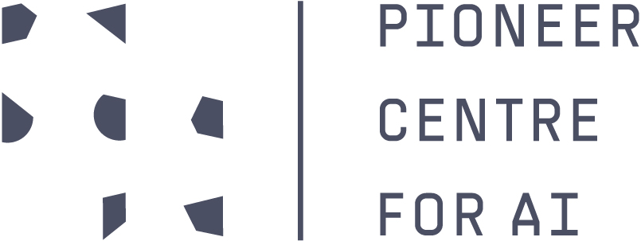

Marco Schouten
Ph.D. student · Copenhagen, DK


I am a PhD student at DTU and the Pioneer Centre for AI in Copenhagen, working in the field of Computer Vision and Machine Learning, specializing in Generative Models. I am advised by Dim P. Papadopoulos and Serge Belongie. I received my M.Sc. from KTH Royal Institute of Technology and my B.Sc. from the University of Genoa.
Publications

An ASP-based Approach to Master Surgical Scheduling
CILC, 2022 PDF
We present an Answer Set Programming-based solution for scheduling specialties in hospital operating rooms, tested on real scenarios.

Answer Set Programming in Healthcare: Extended Overview
IPS-RCRA@ AI* IA, 2020 PDF
Overview of ASP-based solutions for healthcare scheduling problems, including operating rooms and nurse scheduling.